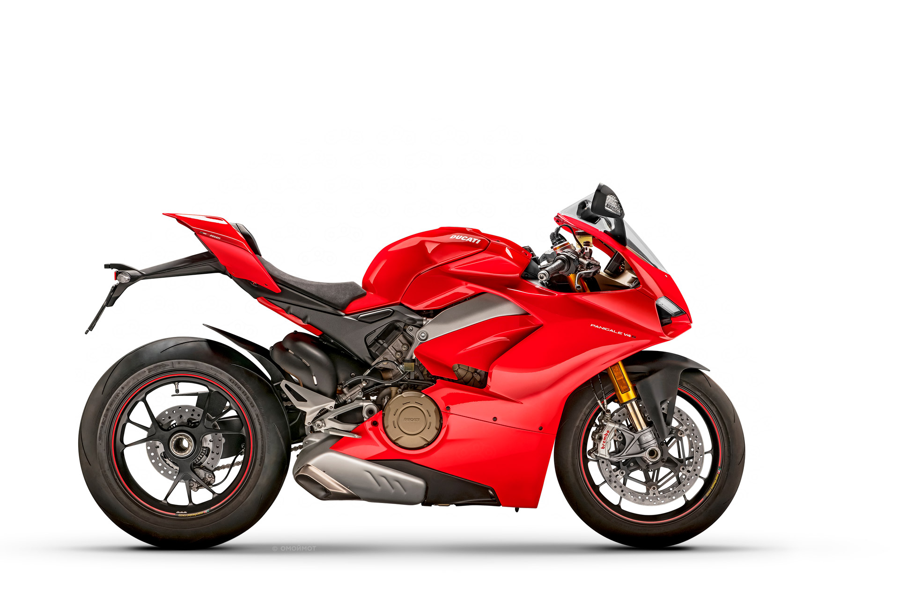
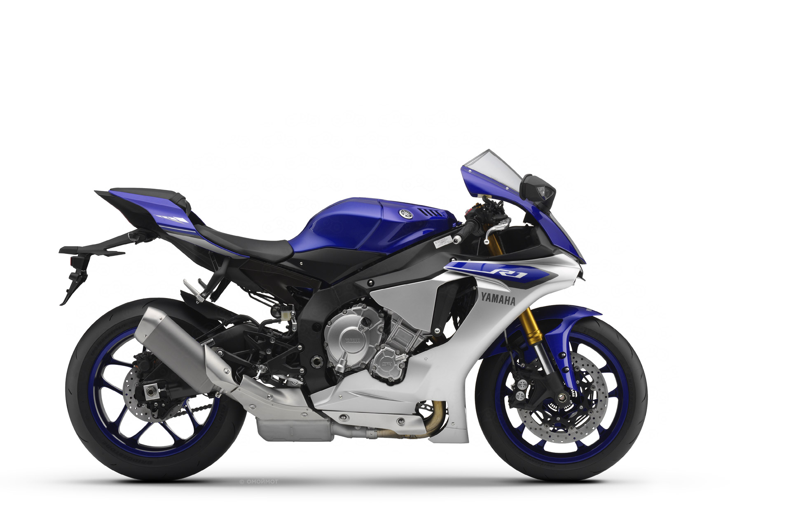
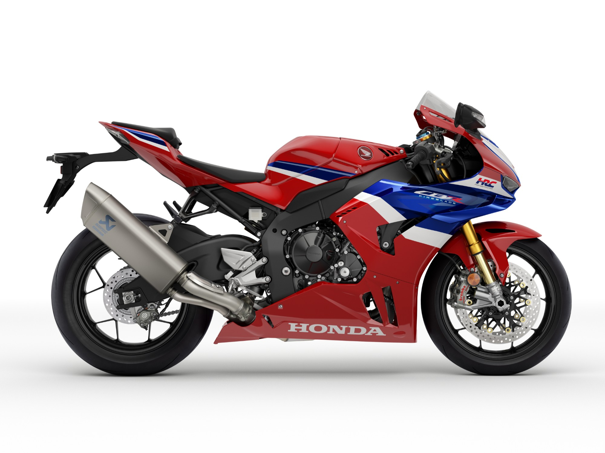
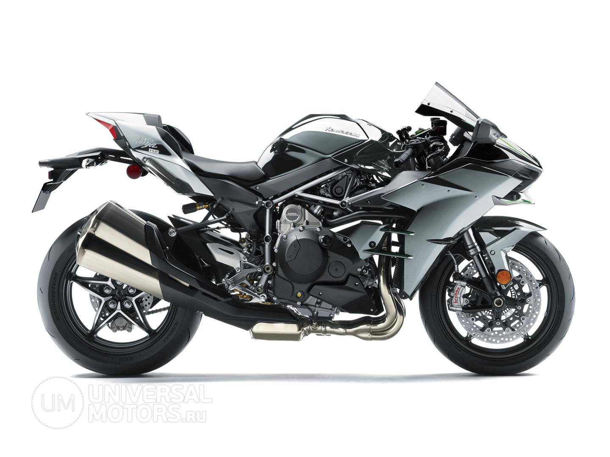
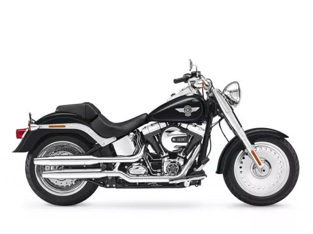
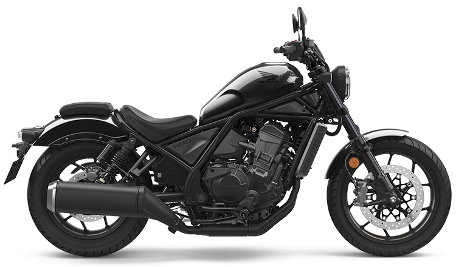
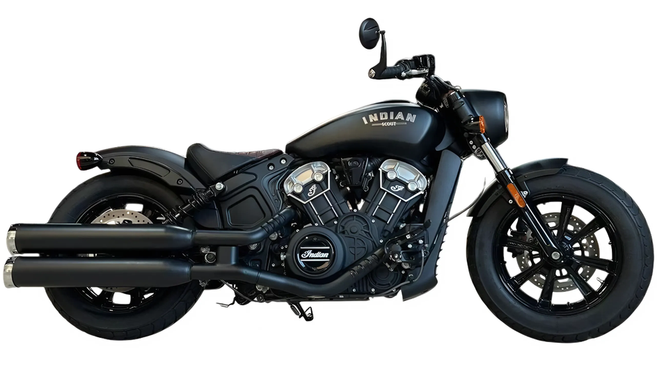
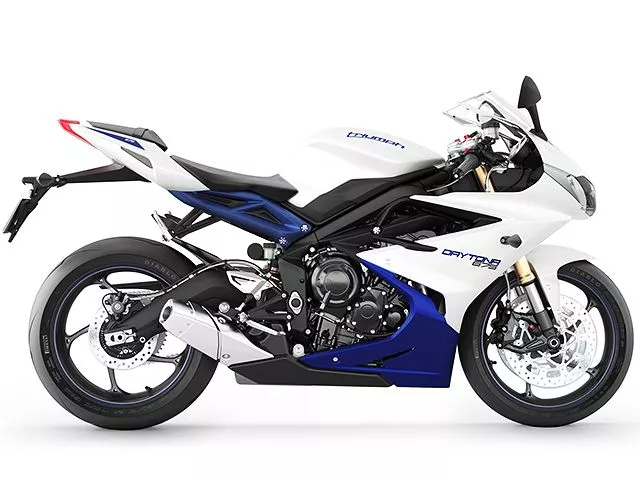

Первый мотоцикл был создан в 1885 году Готлибом Даймлером и Вильгельмом Майбахом в Германии. Он представлял собой деревянную раму с двигателем внутреннего сгорания мощностью 0,5 л.с. С тех пор мотоциклы прошли огромный путь развития - от простых велосипедов с мотором до современных супербайков с мощностью более 200 л.с.

Современные мотоциклы делятся на следующие типы:

Современные мотоциклы оснащаются передовыми электронными системами: трекшн-контроль, ABS, quickshifter, wheelie control, launch control. Двигатели достигают мощности 217 л.с. при объёме 1000 куб. см.
IMU (Inertial Measurement Unit) - шестиосевой датчик, который отслеживает положение мотоцикла в пространстве и управляет работой электронных помощников.
